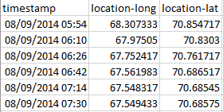
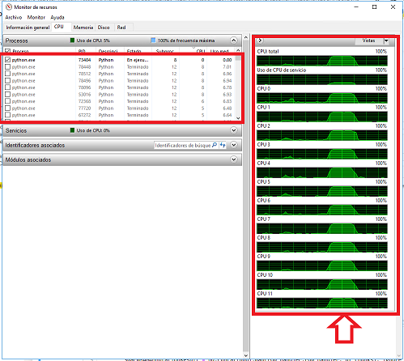

import datetime as dt
from datetime import timedelta
import sys, os
import pandas as pd
import numpy as np
from tqdm import tqdm
from pathlib import Path
import matplotlib.pyplot as plt
from viresclient import set_token
sys.path.append("..")
import utilities
from utilities.MagGeoFunctions import getGPSData
from utilities.MagGeoFunctions import Get_Swarm_residuals2 MagGeo - Parallel Mode
Authors | Fernando Benitez-Paez, Urška Demšar, Jed Long, Ciaran Beggan
Contact | Fernando.Benitez@st-andrews.ac.uk, ud2@st-andrews.ac.uk, jed.long@uwo.ca, ciar@bgs.ac.uk
Keywords | Bird migration, data fusion, Earth’s magnetic field, Swarm, GPS tracking
2.1 Overview
This Jupyter Notebook will guide you through the required steps to annotate your GPS tracking data with the earth’s magnetic field data from Swarm (European Space Agency). This version is called Parallel Mode to take advantage of parallelized computing to process big datasets.
To execute the code, you can go through each cell (pressing Crtl+Enter), you will also find inner comments ## to describe each particular step. If you are not familiar with Jupyter Notebook, you migth want to take some time to learn how to use it first, for example take a look at the notebook-basics.ipynb Notebook inside MagGeo.
For parallel processing, there are some considerations to make:
- Linux and Windows environments have some differences. In windows we need to separate the functions and store them separately, then import them into a
mainfunction. - Defining what part of the process is CPU bound and what part is I/O bound: Identify what parts of the program are I/O bound (writing or reading from the disk or network) and what part par CPU bound ( Processing capacity). To take advantage of our CPU capacity we need to identify the process where the CPU is actually doing the main Tasks.
2.2 Data requirements
🔎 Your trajectory must be in a csv format:
There are three columns that must be included in your GPS trajectory. Make sure your GPS trajectory includes Latitude , Longitude and timestamp. We suggest that the Timestamp column follow the day/month/year Hour:Minute (dd/mm/yyyy HH:MM:SS) format, Latitude and Longitude should be in decimal degrees (WGS84). Optionally an altitude column can be used providing altitude (the altitude must be in km). Other Columns will be ignored. Here it is an example of how your GPS track should look:

For this example we are reading the BirdGPSTrajectory.csv file. If you want to run the method using your own csv file, make sure you store your the file in the ./data folder. For more information about the dataset we used in this example go to the Main Notebook.
2.3 Import the requeried libraries
2.4 Add your VirES web client Token
The VirES client API, requires a token. Before start you need to get your own VirES token. You can visit https://vires.services/ to get yours, and then add it into the next cell.
set_token("https://vires.services/ows", set_default=True)2.5 Reading the GPS track
The following steps will load the GPS track from a csv file, and set some requirements before download the data from Swarm. Importing the GPS track. You can note that there is a folder to store the CSV file. Using os.getcwd() you can validate where the file is located.
base_dir=os.path.dirname(os.getcwd())
temp_results_dir = os.path.join(base_dir, "temp_data")
results_dir = os.path.join(base_dir, "results")
data_dir = os.path.join(base_dir, "data")#Make sure the csv file of your trajectory is stored in the Data folder.
#Enter the name of your GPS track csv file including the extension .csv and press Enter (e.g. BirdGPSTrajectory.csv)
# Make sure you have a column that integrates date and time, before include in MagGeo.
#If your csv track file does not have any altitude attribute, MagGeo will use sea level as your altitude (i.e. 0 Km).
# i.e height (Only in KM)
gpsfilename= "BirdGPSTrajectoryTest.csv"
Lat="location-lat"
Long="location-long"
DateTime="timestamp"
altitude = "height"# Here MagGeo is reading your CSV file, taking the Lat, Long, Date&Time and Altitude attributes and compute, some additional attributes we need to the annotation process.
# Setting the date and time attributes for the required format and computing the epoch column. Values like Maximum and Minimum Date and time are also calculated.
GPSData = getGPSData(data_dir,gpsfilename,Lat,Long,DateTime,altitude)
GPSDataSetting the date and time attributes for the requerided format and computing the epoch column. Values like Maximum and Minimun Date and time are also calculated.
2.6 Validate the right amount of Swarm measures
The following loop is identifiying the time and validating if the time is less than 4:00 hours and more than 20:00 hours to bring one extra day of data. The result of this validation is written in a empty python list which will be later validated to get the unique dates avoing to download data for the same day and reducing the the downloand time process.
%%time
datestimeslist = []
for index, row in GPSData.iterrows():
datetimerow = row['gpsDateTime']
daterow = row['dates']
hourrow = row['times']
hourrow = hourrow.strftime('%H:%M:%S')
if hourrow < '04:00:00':
date_bfr = daterow - (timedelta(days=1))
datestimeslist.append(daterow)
datestimeslist.append(date_bfr)
if hourrow > '20:00:00':
Date_aft = daterow + (timedelta(days=1))
datestimeslist.append(daterow)
datestimeslist.append(Date_aft)
else:
datestimeslist.append(daterow)Getting a list of unique dates, to being used to download the Swarm Data
%%time
def uniquelistdates(list):
x = np.array(list)
uniquelist = np.unique(x)
return uniquelist
uniquelist_dates = uniquelistdates(datestimeslist)
uniquelist_dates2.7 Download Swarm residuals data
Once the date and time columns have been defined, and the unique dates were identified the script can start the download process. Usually the data from Swarm is requested using only one satellite, however MagGeo will use the magnetic measures from the three satellite of the Swarm Mission.
📘 Be aware: Due to the amount of dates the GPS track has (42 days) to request and compute the residuals, the time to process the sample data will take approximately 10 minutes.
Set a connection to the VirES client and using the function Get_Swarm_residuals we will get the swarm residuals for the dates included in the previous list.
%%time
hours_t_day = 24
hours_added = dt.timedelta(hours = hours_t_day)
listdfa = []
listdfb = []
listdfc = []
for d in tqdm(uniquelist_dates, desc="Getting Swarm Data"):
#print("Getting Swarm data for date:",d )
startdate = dt.datetime.combine(d, dt.datetime.min.time())
enddate = startdate + hours_added
SwarmResidualsA,SwarmResidualsB,SwarmResidualsC = Get_Swarm_residuals(startdate, enddate)
listdfa.append(SwarmResidualsA)
listdfb.append(SwarmResidualsB)
listdfc.append(SwarmResidualsC)Concat the previous results and temporally save the requested data locally: Integrate the previous list for all dates, into pandas dataframes. We will temporally saved the previous results, in case you need to re-run MagGeo, with the following csv files you will not need to run the download process.
%%time
TotalSwarmRes_A = pd.concat(listdfa, join='outer', axis=0)
TotalSwarmRes_A.to_csv (os.path.join(temp_results_dir,'TotalSwarmRes_A.csv'), header=True)
TotalSwarmRes_B = pd.concat(listdfb, join='outer', axis=0)
TotalSwarmRes_B.to_csv (os.path.join(temp_results_dir,'TotalSwarmRes_B.csv'), header=True)
TotalSwarmRes_C = pd.concat(listdfc, join='outer', axis=0)
TotalSwarmRes_C.to_csv (os.path.join(temp_results_dir,'TotalSwarmRes_C.csv'), header=True)
TotalSwarmRes_A #If you need to take a look of the Swarm Data, you can print TotalSwarmRes_B, or TotalSwarmRes_C2.8 Set the number of processes, and split the dataframe (GPSData) into chunks
We can set the number or processess we need to dedicate for the multiprocessing mode, of course that also depends on the number of cores the machine you are using to run MagGeo. You can use multiprocessing.cpu_count() to set the number of processes as the the number of cores your machine has. Beside that we will also to split the GPS track into chucks to dedicate each core for each chuck. For more information take a look at the Home Notebook.
import multiprocessing
import sklearn
from multiprocessing import Pool
NumCores = multiprocessing.cpu_count()
df_chunks = np.array_split(GPSData,NumCores)
df_chunks2.9 Spatio-Temporal filter and Interpolation process (ST-IDW)
Once we have requested the swarm data, now we need to filter in space and time the available points to compute the magnetic values (NEC frame) for each GPS point based on its particular date and time. The function ST_IDW_Process imported in the row_handler, takes the GPS track and the downloaded data from swarm to filter in space and time based on the criteria defined in our method. With the swarm data filtered we interpolated (IDW) the NEC components for each GPS data point, based on the latitude, date, time and number of Swarm points filtered.
The function CHAOS_ground_values, inside the MagGeoFunctions file, is used to run the Calculation of magnetic components. This calculation requeries the magnetic components at the trajectory altitude (or at the ground level) using CHAOS (theta, phi, radial). This process include a rotation and transformation between a geocentric frame (CHAOS) and geodetic frame (GPS track). Once the corrected values are calculated, are included in the GPS track, and the non-necesary columns are removed. For more information about this process go to the Main Notebook.
2.9.1 Run the (ST-IDW) process in parallel mode
Although the next cell seems to run a small main function. What is happening is a call for several functions running at same time for several cores. Initially we set a pool of processes. Using the pool class we will distribute the assigned function among the data chucks we created. Every data chunk will be like a subset of the entire GPS track. So we need to iterate among data chunk. And inside every data chunk we need to identify the datetime, epoch, altitude, latitude and longitude of each row to run the interpolation & annotation process using the Swarm data we have filtered and stored in the previous steps.
The function in charge to distribute the required function (row_handler) among the data chunks is the map function from the pool class.
row_handler.py is an interows iteration to get the required parameter for the ST_IDW_Process function.
📘 Auxiliary Functions:
-
ST_IDW_Process function: This is the main function in charge to read the Swarm Data already filtered, and then import
DfTime_func,distance_to_GPS,Kradius,DistJfunctions to compute the spatial-time cylinder and the annotation process. The return of this function is a row (dictionary) that will be appended into a python list where all the results from the different cores. The python list from every process is concatenated into a pandas dataframe in themainfunction having there the whole chain of the parallel process. - distance_to_GPS function: Is the function in charge to calculate the distance between each GPS Point and the Swarm Point.
- Kradius function: Is the function in charge to compute the R (radius) value in the cylinder. The R value will be considered based on the latitude of each GPS Point.
-
DistJ function: This function will calculate the
dvalue as the hypotenuse created in the triangle created amount the locations of the GPS point, the location of the Swarm points and the radius value. -
DfTime_func function: This is a time function to selected the points in the range of a the DeltaTime -
DTwindow. The Delta time window has been set as 4 hours for each satellite trajectory. - CHAOS_ground_values function: This is the calculation of geomagnetic components function to get the CHAOS magnetic values and process the Nres,Eres,Cres values and transform them into the N,E,C values at the GPS altitude.
%%time
from functools import partial
from utilities.row_handler import row_handler
if __name__ == '__main__':
with multiprocessing.Pool(NumCores) as pool:
GeoMagParallelResult = pd.concat(pool.map(partial(row_handler),df_chunks), ignore_index=True)With the Parallel mode the Annotation process takes about 12 seconds to complete ( We had tested the parallel process in a windows server machine with 12 cores, see the image bellow). With the same GPS track in the sequetial mode the process is complete in about 2 minutes. In the image bellow you can see how the machine create several python processes and all cores (full CPU capacity) is taken.
🔈 Multiprocessing:
is even more powerfull when you have to process a big amount of data (e.g. 2 millons of points). Although here is making a notable improvement if you have to process a big dataset the parallelization makes even more sense.
Be aware that there is no output cell in here, you can follow the parallelization progress in the Anaconda Prompt.

2.10 The final result
With the NEC components for each GPS Track point, it is possible to compute the aditional magnetic components. For more information about the magnetic components and their relevance go to the main paper or notebook.
<strong>📘 The annotated dataframe will include the following attributes:</strong> If you need more information about how the geomagnetic component are described go to the main MagGeo Notebook (Add Link).
<ul>
<li><strong>Latitude</strong> from the GPS Track.</li>
<li><strong>Longitude</strong> from the GPS Track.</li>
<li><strong>Timestamp</strong> from the GPS Track.</li>
<li><strong>Magnetic Field Intensity</strong> mapped as Fgps in nanoTeslas (nT).</li>
<li><strong>N (Northwards) component</strong> mapped as N in nanoTeslas (nT).</li>
<li><strong>E (Eastwards) component</strong> mapped as E. in nanoteslas (nT).</li>
<li><strong>C (Downwards or Center)</strong> component mapped as C in nanoTeslas (nT).</li>
<li><strong>Horizontal component</strong> mapped as H in nanoTeslas (nT).</li>
<li><strong>Magnetic Inclination </strong> mapped as I in degrees.</li>
<li><strong>Magnetic Declination or dip angle</strong> mapped as D in degrees</li>
<li><strong>Kp Index</strong> mapped as kp</li>
<li><strong>Total Points</strong> as the amount of Swarm messuares included in the ST-IDW process from the trajectories requested in the three satellites.</li>
<li><strong>Minimum Distance</strong> mapped as MinDist, representing the minimum distance amount the set of identified point inside the Space Time cylinder and each GPS point location.</li>
<li><strong>Average Distance</strong> mapped as AvDist, representing the average distance amount the set of distances between the identified Swarm Point in the Space Time cylinder and the GPS Points location.</li>
</ul>#14. Having Intepolated and weigth magnetic values, we can compute the other magnectic components.
GeoMagParallelResult['H'] = np.sqrt((GeoMagParallelResult['N']**2)+(GeoMagParallelResult['E']**2))
#check the arcgtan in python., From arctan2 is saver.
DgpsRad = np.arctan2(GeoMagParallelResult['E'],GeoMagParallelResult['N'])
GeoMagParallelResult['D'] = np.degrees(DgpsRad)
IgpsRad = np.arctan2(GeoMagParallelResult['C'],GeoMagParallelResult['H'])
GeoMagParallelResult['I'] = np.degrees(IgpsRad)
GeoMagParallelResult['F'] = np.sqrt((GeoMagParallelResult['N']**2)+(GeoMagParallelResult['E']**2)+(GeoMagParallelResult['C']**2))
GeoMagParallelResultThe previous dataframe (GPS_ResInt), MagGeo has computed the geomagnetic components for each locations and time of your CSV trajectory. Now we will finish up combining the original atributes from your CSV with the annotated results from MagGeo.
%%time
originalGPSTrack=pd.read_csv(os.path.join(data_dir,gpsfilename))
MagGeoResult = pd.concat([originalGPSTrack, GeoMagParallelResult], axis=1)
#Drop duplicated columns. Latitude, Longitued, and DateTime will not be part of the final result.
MagGeoResult.drop(columns=['Latitude', 'Longitude', 'DateTime'], inplace=True)
MagGeoResult2.11 Export the final results to a CSV file
%%time
#Exporting the CSV file
outputfile ="GeoMagResult_"+gpsfilename
export_csv = MagGeoResult.to_csv (os.path.join(results_dir,outputfile), index = None, header=True)2.12 Validate the results (optional)
To validate the results we plot the Fcolumn.
## Creating a copy of the results and setting the Datetime Column as dataframe index.
ValidateDF = GeoMagParallelResult.copy()
ValidateDF.set_index("DateTime", inplace=True)
## Plotting the F column.
hist = ValidateDF.hist(column='F')
plt.title('F distribution')
plt.xlabel('F in nT')
plt.ylabel('# of measurements')2.13 Mapping the GPS Track using the annotated Magnetic Values (optional)
Now we are going to plot the annotated GPS track stored into the MagDataFinal dataframe to see how the different magnetic components in a map to have a better prespective of the impact of the earth magnetic field.
ValidateDF.plot(kind="scatter", x="Latitude", y="Longitude",
label="Magnetic Intensity in nT",
c="F", cmap=plt.get_cmap("gist_rainbow"),
colorbar=True, alpha=0.4, figsize=(10,7),
sharex=False #This is only needed to get the x-axis label working due to a current bug in pandas plot.
)
plt.ylabel("Longitude", fontsize=12)
plt.xlabel("Latitude", fontsize=10)
plt.legend(fontsize=12)
plt.show()import geopandas
import geoplot
import hvplot.pandas
gdf = geopandas.GeoDataFrame(ValidateDF, geometry=geopandas.points_from_xy(ValidateDF.Longitude, ValidateDF.Latitude))
gdf.head()gdf.hvplot(title=f'Annotated trajectory using MagGeo - F GeoMag Intensity',
geo=True,
c='F',
tiles='CartoLight',
frame_width=700,
frame_height=500)gdf.hvplot(title=f'Annotated trajectory using MagGeo - I Inclination',
geo=True,
tiles='CartoLight',
c='I',
cmap='Viridis',
frame_width=700,
frame_height=500)world = geopandas.read_file(geopandas.datasets.get_path('naturalearth_lowres'))
ax = world.plot(color='white', edgecolor='black', figsize = (12,6))
minx, miny, maxx, maxy = gdf.total_bounds
ax.set_xlim(minx, maxx)
ax.set_ylim(miny, maxy)
# We can now plot our ``GeoDataFrame``.
gdf.plot(ax=ax, column='F', legend=True,
legend_kwds={'label': "Magnetic Intensity in nT",
'orientation': "horizontal"})
plt.ylabel("Longitude", fontsize=9)
plt.xlabel("Latitude", fontsize=9)
plt.show()fig, (ax1, ax2) = plt.subplots(ncols=2, figsize = (15,6))
ax1 = world.plot(ax=ax1, color='white', edgecolor='black')
xlim = ([gdf.total_bounds[0], gdf.total_bounds[2]])
ylim = ([gdf.total_bounds[1], gdf.total_bounds[3]])
ax1.set_xlim(xlim)
ax1.set_ylim(ylim)
gdf.plot(ax=ax1, column='F', legend=True,
legend_kwds={'label': "Magnetic Intensity in nT",
'orientation': "horizontal"})
plt.ylabel("Longitude", fontsize=9)
plt.xlabel("Latitude", fontsize=9)
ax1.set_title('Magnetic Intensity - F')
ax1.set_xlabel('Latitude')
ax1.set_ylabel('Longitude')
ax2 = world.plot( ax=ax2, color='white', edgecolor='black')
xlim = ([gdf.total_bounds[0], gdf.total_bounds[2]])
ylim = ([gdf.total_bounds[1], gdf.total_bounds[3]])
ax2.set_xlim(xlim)
ax2.set_ylim(ylim)
# We can now plot our ``GeoDataFrame``.
gdf.plot(ax=ax2, column='D', legend=True, cmap='Spectral',
legend_kwds={'label': " Declination in Degrees",
'orientation': "horizontal"})
ax2.set_title('Declination - D')
ax2.set_xlabel('Latitude')
ax2.set_ylabel('Longitude')